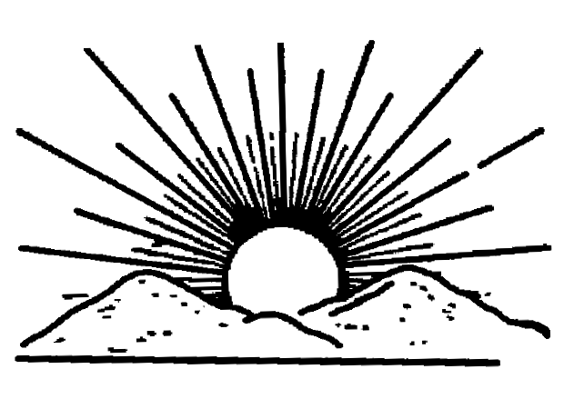
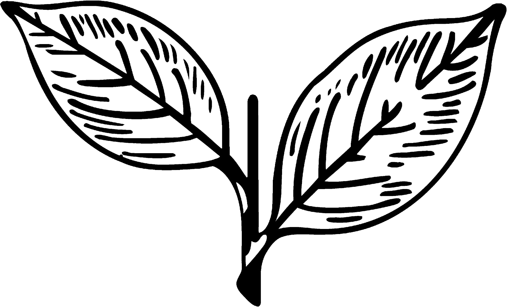

Real-time seat projections, party-wise vote share analysis, district trends, and leader insights — all in one place.
234
Total Seats
118
Majority Mark
6.2Cr+
Registered Voters
38
Districts
Days to Election—
Estimated: May 2026
Alliance Overview
Seat Projections

DMK Alliance
Dravidam Munnetra Kazhagam + INC + Others
150–175
Projected Seats (out of 234)
46.2%
Vote Share
161
Midpoint Estimate
▲ Strong

AIADMK Alliance
All India Anna Dravidam Munnetra Kazhagam + BJP + PMK
45–70
Projected Seats (out of 234)
31.4%
Vote Share
57
Midpoint Estimate
▼ Declining
Third Front
TVK (Vijay) · NTK · AMMK · DMDK · Independents
5–20
Projected Seats (out of 234)
22.4%
Vote Share
16
Midpoint Estimate
▲ Rising
Election Metrics
Key Stats
🗳️
72.5%
Expected Voter Turnout
▲ +2.1% from 2021
👥
6.2Cr
Total Voters
📈 +8.5% growth
🏛️
234
Assembly Seats
🔒 Unchanged
📊
38
Districts
🗺️ All active
💰
₹2,500Cr
Election Budget
💸 Record high
📰
15
Key Issues
🔥 Hot topics
Key Leaders
Hover to Pause
Data Analysis
Charts
Seat Projection — Alliance
Vote Share Distribution
Historical Trend — Vote Share (2011–2026 Est.)
Live Poll Tracker
UPDATING
DMK Alliance
161
Seats | 46.2% share
Last updated just now
AIADMK Alliance
57
Seats | 31.4% share
Last updated just now
TVK (Vijay)
10
Seats | 13.5% share
Last updated just now
NTK + Others
6
Seats | 8.9% share
Last updated just now
District Trend Map
Clickable
Click any district region to view detailed breakdown
DMK Alliance Lead
AIADMK Alliance Lead
Swing / Third Front
Key Insights
🔴
DMK Wave Continues
After a sweeping 2021 victory with 133 seats, DMK's welfare schemes and governance record position it for an even stronger 2026 outing — early polls suggest 150–175 seats.
🟢
AIADMK Split Impact
Post-O.Panneerselvam expulsion, internal fissures continue to haunt AIADMK. EPS faces the challenge of consolidating a fragmented base against a united DMK.
🟠
TVK — The Wildcard
Actor-turned-politician Vijay's Tamilaga Vettri Kazhagam is contesting its first election. Youth-driven enthusiasm could translate into meaningful vote share, acting as kingmaker in close contests.
📊
Anti-Incumbency Risk
Tamil Nadu historically alternates between DMK and AIADMK every 5 years, but 2026 may break that pattern as DMK's welfare delivery has maintained approval ratings above 55%.
🗺️
Southern Districts Crucial
Districts like Tirunelveli, Thoothukudi, and Kanyakumari are swing territory — these 30+ seats will significantly determine the final majority tally.
🤝
Alliance Arithmetic
DMK's tie-up with Congress and smaller parties provides broader caste reach. AIADMK's BJP alliance may help in some urban pockets but risks alienating traditional vote banks.
Key Election Issues
Hot Topics
💧
Water Crisis
Northeast monsoon failure and Cauvery dispute impact rural voters.
High Priority
💼
Unemployment
Youth joblessness at 12.5% drives urban discontent.